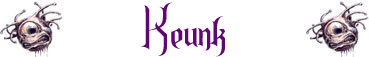

|
|
Ambiente/Habitat | Caverne, Miniere e Sotterranei |
| Frequenza | Rara | |
| Organizzazione | Gruppo | |
| Periodo di Attività | Qualsiasi | |
| Dieta | Onnivora | |
| Intelligenza | Highly intelligent (13) | |
| Punti Combattimento | 20 Punti Combattimento | |
| Tesoro | Comune | |
| Allineamento Dominante | Legale Malvagio | |
| Numero di Apparizione | 1d10: (1-6) 3 (7-10) 1d4+2 | |
| Classe Armatura | 4 [10 base, 3 corazza, 3 destrezza] | |
| Movimento | 8 esagoni | |
| Dadi Vita | 5 | |
| Thac0 / Valore di Carica | Thac0 15 / Valore di Carica 13 | |
| Numero di Attacchi | Arma / Arma | |
| Danni | 1d6+1/ 1d6+1 | |
| Poteri Offensivi | Istinto Predatorio; | |
| Poteri Difensivi | Schivata; | |
| Poteri Generici | Connessione Neurale; | |
| Vulnerabilità | Sensibilità alla Luce Solare; | |
| Resistenza alla Magia | 10% + 5% per ogni altro Keunk entro 9 metri (max.20%) | |
| Sensi | Infravisione (21 m.) | |
| Dimensioni | Small (1 m. di altezza) | |
| Morale | Elite (13) | |
| Valore in Punti Esperienza | 727 |
|
TIRI SALVEZZA DELLA CREATURA |
|||||||
| CORAGGIO | ENERGIA VITALE | MAGIA | MALATTIA | MENTE | RIFLESSI | ROBUSTEZZA | VELENO |
| 0 | 0 | 0 | 0 | 0 (+5%/+10%) | +5% (+10%/+15%) | 0 | 0 |
| 45 | 52 | 59 | 44 | 57 (52 / 47) | 41 (36 / 31) | 54 | 48 |
Descrizione
Questi piccoli umanoidi altri circa un metro hanno una pelle grigiastra, viscida e sempre lucida. Dal loro corpo spuntano numerosi arti esili ed allungati, quattro gambe e ben sei braccia con le quali impugnano piccoli pugnali ed armi similari.
Combat
I Keunk sono combattenti ben organizzati, infatti posseggono un collegamento neurale collettivo che migliora le loro capacità in battaglia quando sono vicini. Per tale motivo, costoro cercano di restare vicini (entro 9 metri) ad almeno altri due individui per sfruttare a pieno il beneficio concesso. Si muovono e attaccano prevalentemente in gruppo e quando si avventano in più su un avversario possono divenire davvero pericolosi. Queste creature possono impugnare solo armi piccole e le armi solitamente usate come principali sono due Spade Corte [Iniziativa: +3, Danno: 1d6, Materiale: Acciaio]. Nelle altre quattro braccia impugnano quattro Stiletti [Iniziativa: +1, Danno: 1d3, Materiale: Metallo] che possono utilizzare, come attacchi secondari, solo in determinate condizioni di combattimento come spiegato nel potere speciale ATTACCHI COLLETTIVI.
ISTINTO PREDATORIO (Moderate Special Ability): La creatura possiede un forte istinto predatorio, per tale motivo costei riceve un bonus costante di +1 ai suoi tiri per colpire.
ATTACCHI COLLETTIVI (Superior Special Ability) [ATTACCHI SECONDARI - STILETTI]: Quando questa creatura si trova assieme ad una o due creature della stessa razza in corpo a corpo con il medesimo avversario, alla fine del round queste creature potranno effettuare rispettivamente due o quattro attacchi multipli successivi del tipo indicato, ai quali sarà applicata rispettivamente una penalità di -1, -2, -3 e -4 ai rispettivi tiri per colpire effettuabili unicamente contro il suddetto avversario.
SCHIVATA (Lesser Special Ability): La creatura è particolarmente agile. Una volta al round, infatti, la stessa potrà provare a schivare un qualsiasi attacco ricevuto in corpo a corpo da una posizione frontale che non sia di dimensioni superiori a large. La creatura ha il 20% di riuscire a schivare il colpo in arrivo. Questo tiro percentuale va effettuato prima del tiro per colpire effettuato dall'avversario. Se l'avversario effettua un 20 naturale sull'attacco che la creatura era riuscita a schivare lo stesso andrà comunque a segno ma senza conseguenze critiche. Al tiro percentuale andranno applicate le penalità previste per il mantenimento della concentrazione in situazioni di combattimento particolari (come ad esempio incapacitato). La creatura non potrà provare a schivare in alcun caso attacchi a distanza.
EVASIONE MIGLIORATA (Moderate Special Ability): Questa creatura è in grado di spostarsi così agilmente da poter evadere gli attacchi alle spalle dei propri nemici. In particolare, questa creatura potrà utilizzare la competenza Evasive Fighting disponendo di una prova complessiva pari a 14.
MOVIMENTO LATERALE (Moderate Special Ability): Qualora durante un combattimento si spostino dalla posizione originariamente occupata in una qualsiasi altra posizione che si trovi sempre adiacente al proprio avversario (senza quindi lasciare il corpo a corpo con lo stesso) quest'ultimo non potrà effettuare alcun attacco di opportunità nei confronti della creatura.
CONNESSIONE
NEURALE
(Superior Special
Ability): Quando
questa creatura si trova entro 9 metri di distanza
da una o due creature della stessa razza, aventi questo medesimo potere
speciale, la creatura riesce ad istaurare (si consideri una non azione ad
effetto immediato) una connessione neurale con il cervello delle altre creature.
Si noti che ogni creatura può risultare connessa ad un massimo di altre due
creature nonostante siano vicine un numero maggiori di creature (la connessione
deve essere accettata da entrambe le creature). Lo stato di stordimento (stunned)
e lo stato comatoso impediscono la connessione al cervello della creatura.
Quando la connessione neurale è stabilita si applicano i seguenti benefici a
tutte le creature fino a che restano connesse (il primo si applica in caso di
connessione tra due creature, il secondo in caso di connessione tra tre
creature):
Bonus di +1/+2 al dado base dei danni inflitti con ogni attacco principale (non
si applica ad attacchi supplementari dovuti all'uso di poteri speciali).
Bonus di +5%/+10% ai tiri salvezza su mente.
Bonus di +5%/+10% ai tiri salvezza su riflessi.
Bonus di +5%/+10% alle prove nell'abilità schivata eventualmente posseduta.
Bonus di +5%/+10% al valore di resistenza alla magia eventualmente posseduta.
Bonus di +1/+2 alle prove nell'abilità di evasione eventualmente posseduta.
Risparmio di 1/2 punti combattimento utilizzati nel corso di ogni round (non
cumulabile con alcun altra riduzione).
SENSIBILITA' ALLA LUCE SOLARE (Lesser Special Vulnerability): Questa creatura è particolarmente sensibile alla luce solare od alla luce ad essa equivalente (qualsiasi fonte luminosa in grado di illuminare in un raggio di 12 metri). Per tale motivo, quest'essere cerca di evitarla girando all'esterno nelle ore notturne. Se costretta a combattere nel raggio di illuminazione di una luce pari a quella del giorno la creatura subirà una penalità di -1 ai suoi tiri per colpire.
Habitat/Society
I Keunk sono una razza di alieni piccoli e malvagi, la cui organizzazione ricorda quella delle formiche. Questa razza, infatti, conta sul numero ed una volta creato un mediamente pacifici, scavano vere e proprie città sotto terra come formicai. Costoro sono tutti piccoli individui maschi tranne la Regina che è un’enorme larva che solo prima di morire genera un’altra femmina. La regina è un essere immobile, custodito e costantemente nutrito. Il suo unico scopo è quello di deporre costantemente uova contenenti individui maschi. I Keunk la difendono fino alla morte, in sua presenza (entro 30 metri) si considerano a tutti gli effetti Fearless ed ottengono sempre il beneficio massimo concesso dal potere connessione neurale attraverso una connessione illimitata al cervello della regina. Quando casualmente nascono 2 regine, un gruppo di tre Kenku maschi ne prende una staccandosi dalla comunità per fondarne un’altra. Tra di loro le comunità sono quasi sempre pacifiche.
Ecology
I Keunk sono a volte sottomessi a razze più ostili o potenti, si pensi ai Mind Flyer od agli Elfi Scuri che li usano come pattugliatori o guardiani facendoli dimorare ai confini dei loro territori.
Mystical Resource Sourge
(Cervello) Quantità: 1, Presenza 15%
- Scuola di Magia :
Divination
- Qualità
della Risorsa: Common.